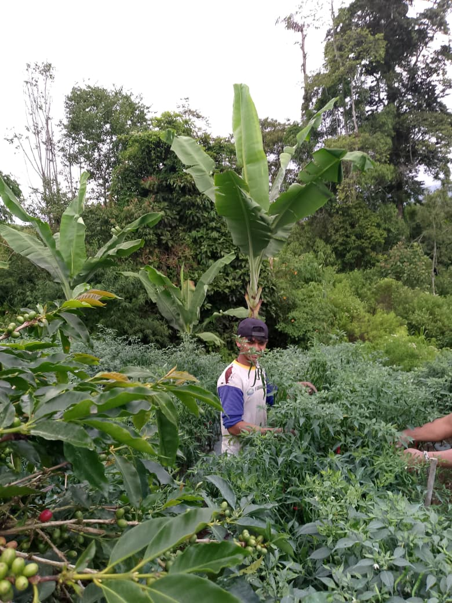
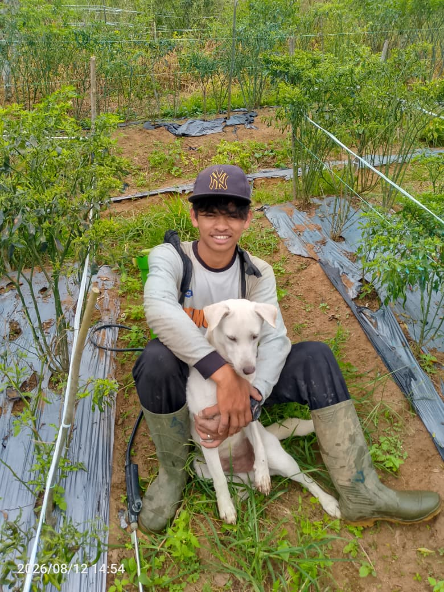
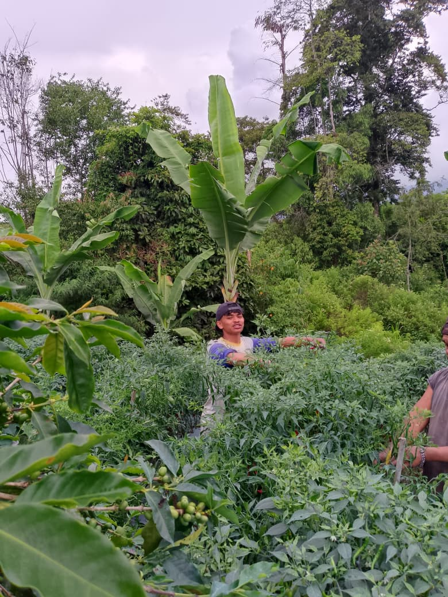
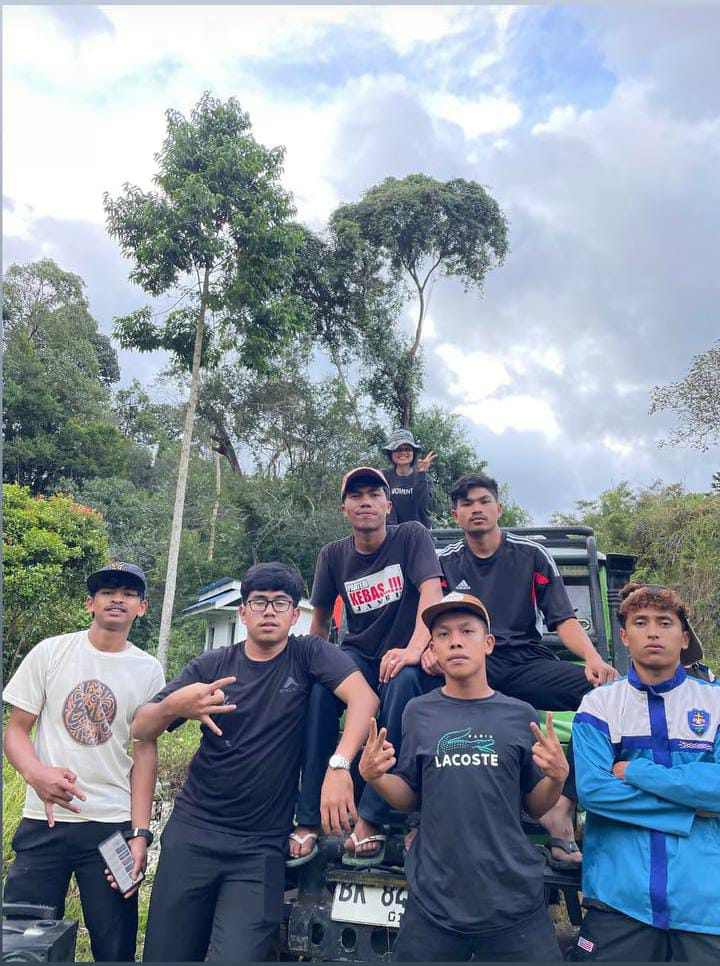
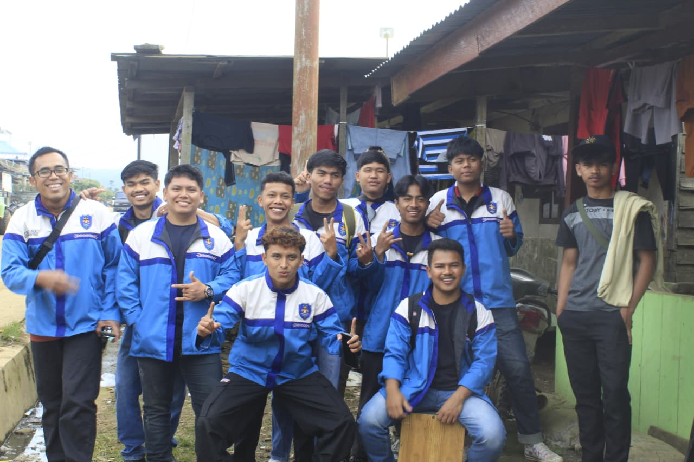
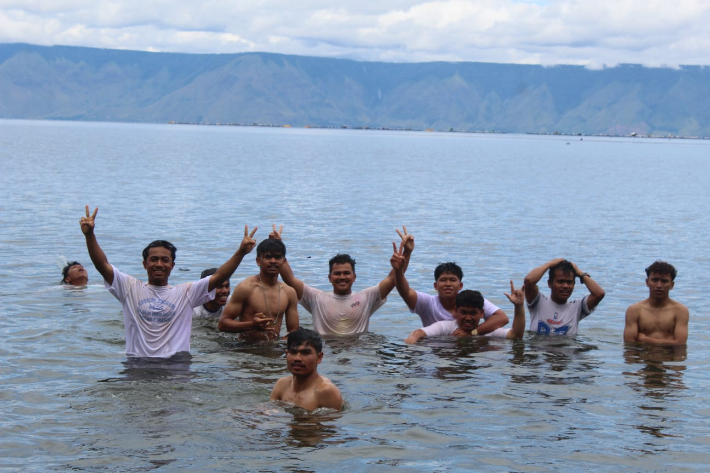
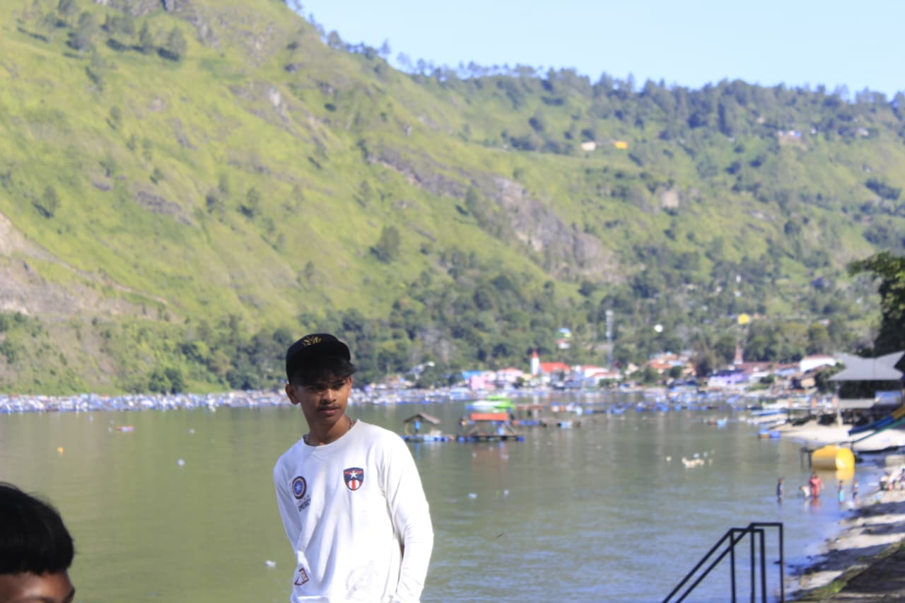

Liburan Saya
Liburan semester ini sangat berkesan dan bermakna bagi saya. Pada dua minggu pertama liburan, saya mudik ke kampung halaman untuk bertemu dengan orang tua dan keluarga. Sebagian besar waktu liburan saya gunakan untuk membantu orang tua bekerja di ladang cabai. Setiap pagi saya membantu menyemprot hama, mencor pupuk, dan pada sore harinya memetik hasil panen cabai. Meskipun melelahkan di bawah terik matahari, saya merasa senang karena bisa membantu meringankan pekerjaan orang tua. Hasil penjualan cabai tersebut dikumpulkan untuk membantu biaya kuliah saya pada semester depan. Selain bekerja di ladang, saya juga menyempatkan waktu untuk mengunjungi rumah nenek untuk melepas rindu.
Tidak hanya bekerja, liburan ini juga diisi dengan kegiatan rekreasi yang sangat menyenangkan bersama keluarga. Kami sempat jalan-jalan ke Haranggaol untuk menikmati keindahan alam Danau Toba, mandi-mandi di air yang segar, serta mengadakan acara bakar-bakar bersama keluarga. Momen kebersamaan ini membuat liburan semakin berkesan dan membuat saya lebih semangat untuk kembali kuliah.
Galeri Foto Liburan






